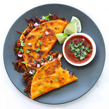

Birria Tacos Recipes

Description:
Mexican birria tacos, Jalisco-style, made with braised beef that's slow-cooked in a fragrant 3-chile sauce with a delicious spice mix. Crispy tacos, and tender, mouth-watering beef team up with melted Mexican cheese in this impressive meal. This recipe takes a little time but it's so worth it!
Ingredients:
- Dried chile pepers
- Beef
- Seasonings (salt, pepper, fresh garlic, whole cloves, cinnamon, cumin, thyme, marjoram, and oregano)
- Olive oil
- Tomatoes
- Vinega
- Tortillas
- Onion and cilantro
Steps:
- Boil the dried peppers for 5 minutes, then remove from heat and let the peppers soak until the water is cool. Drain, reserving some water.
- Season the beef and sear on all sides in oil in a Dutch oven.
- Grill the tomatoes until the skin is blistered and begins to peel.
- Blend the soaked chili peppers with the reserved chile water, tomatoes, vinegar, and seasonings.
- Strain the sauce and pour over the meat. Cover the Dutch oven and cook until the meat begins to fall apart, basting often. Allow the meat to rest, then shred.
- Warm the tortillas on the griddle. Fill each tortilla with meat, onions, and cilantro.
Menu